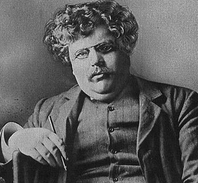

He has come to the most dreadful conclusion a literary man can come to, the conclusion that the ordinary view is the right one. It is only the last and wildest kind of courage that can stand on a tower before ten thousand people and tell them that twice two is four. HERETICS
Gilbert Keith Chesterton (1874-1936) was a British journalist, a distributivist and eventually a Catholic. Best known perhaps for his Father Brown mysteries, he also wrote novels, poetry, biography, literary criticism, social commentary and apologetics.
[This is the oldest page on the site; I think I first put it up sometime in the 90's.]